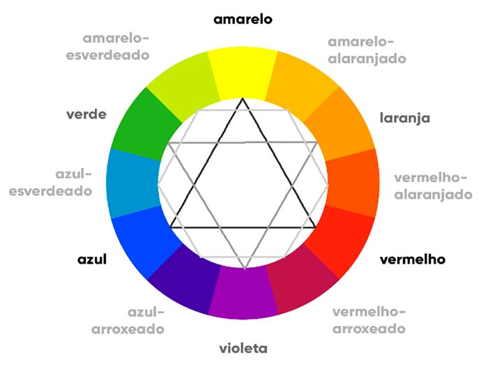

•Melhor forma de ultilizar é com o padrao hexadecimal, pois é facil e muito ultilizado pela maioria dos softwares.
ex: #000000 (preto) #ffffff (branco)
Ciruclo cromatico

• Cores:
Cores primarias (Amarelo, Vermelho, Azul);
Cores Secundarias (Verde, Laranja, Violeta);
Cores Terciarias (Demais Cores)
• Temperatura das cores:
Cortar o circulo cromatico ao meio e as cores da esquerda são frias e as da direita são quentes.
• Cores Complementares:
Ultilizar cor oposta do circulo para dar contraste
ex: Violeta - Amarelo
• Cores Análogas:
não tem contraste, e sim uma harmonia, pegar as cores vizinhas da que foi escolhida.
ex: violeta - vermelho arroxeado - azul arroxeado